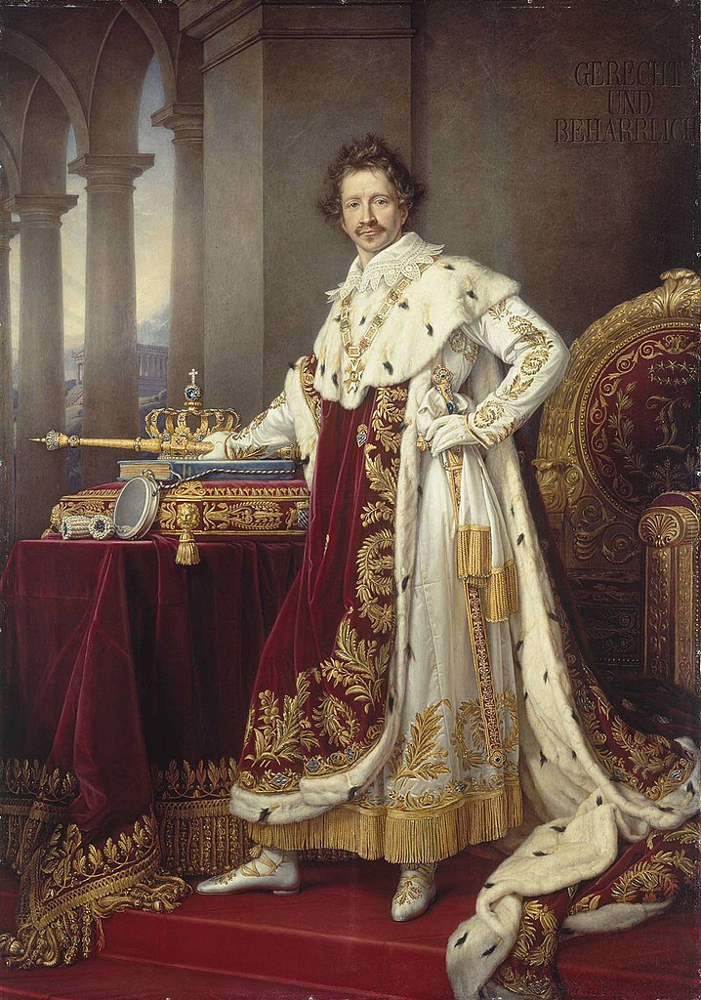
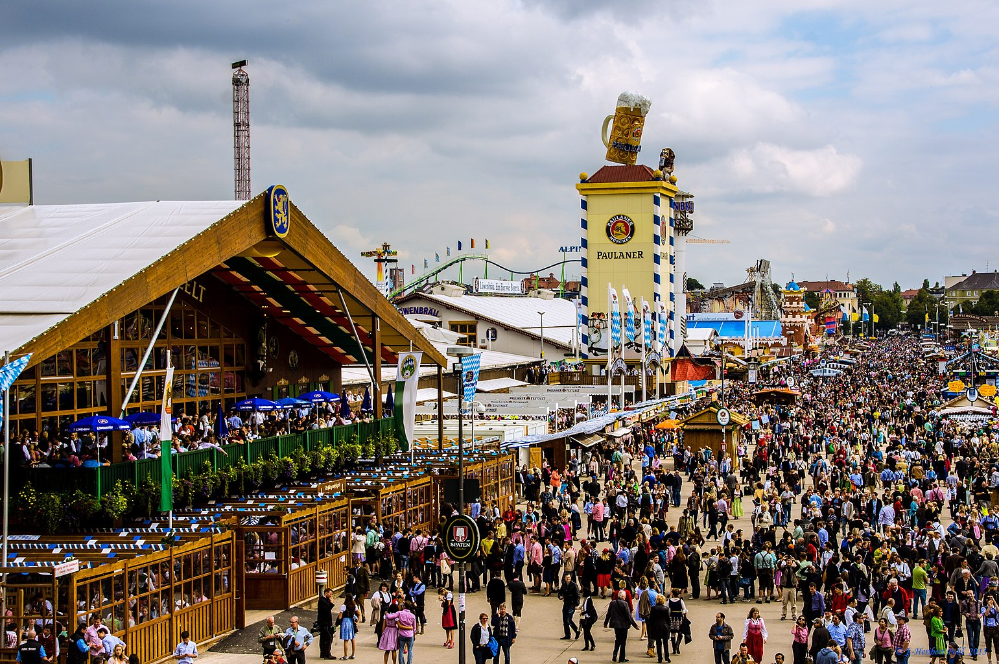
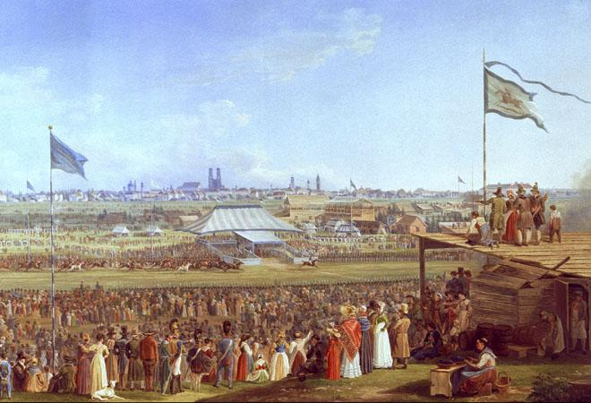
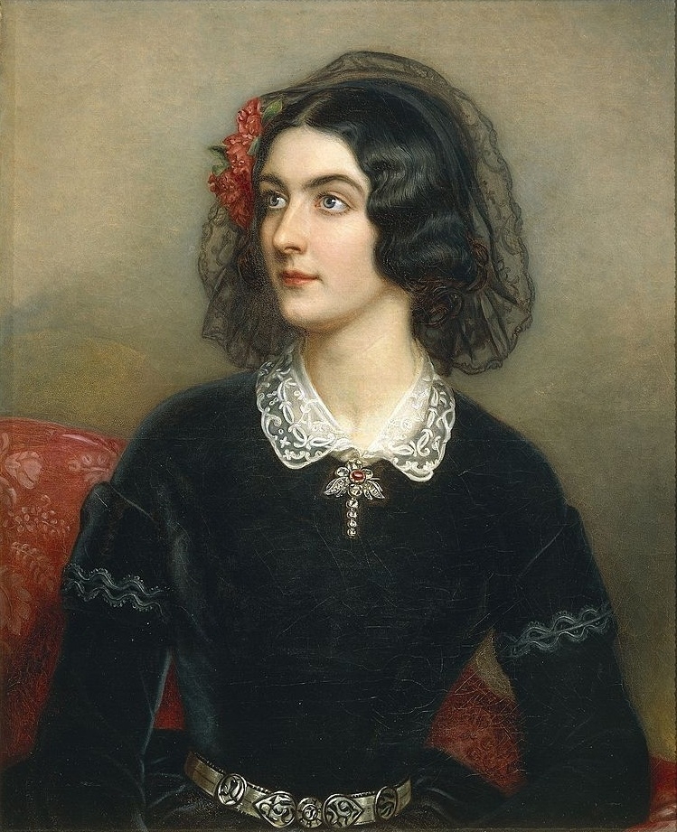
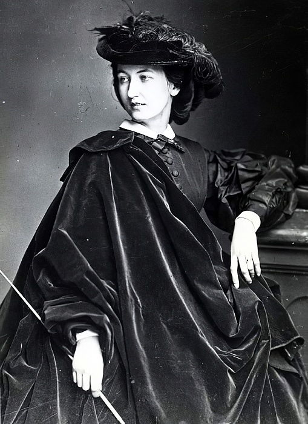
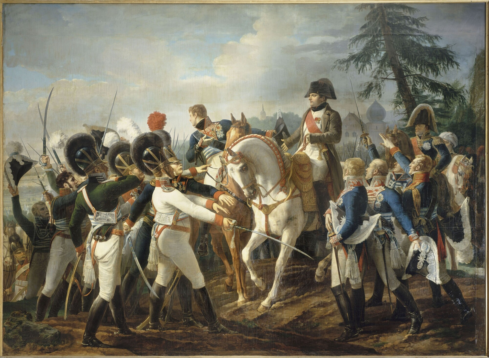
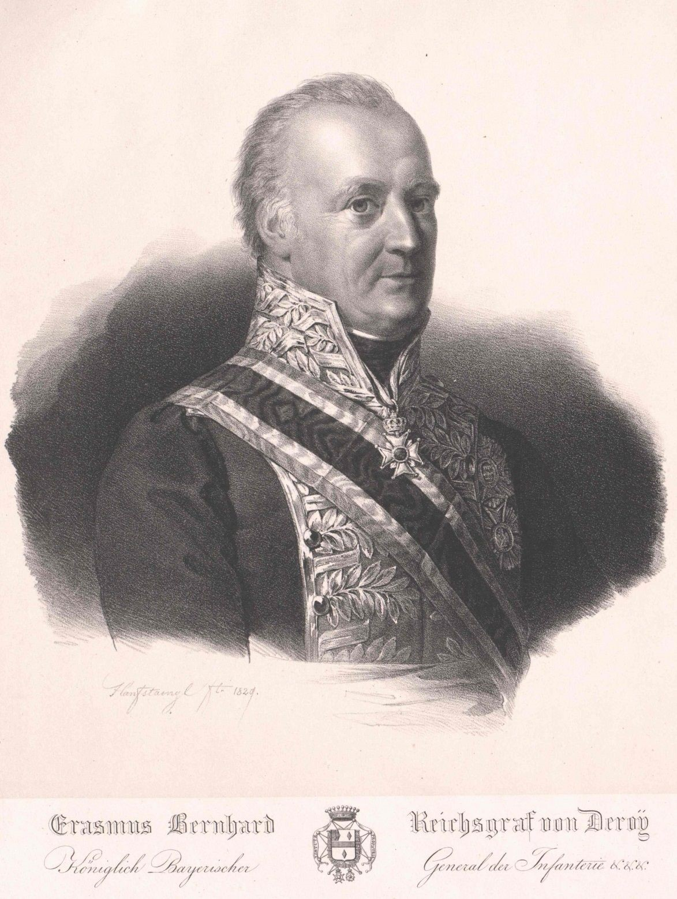
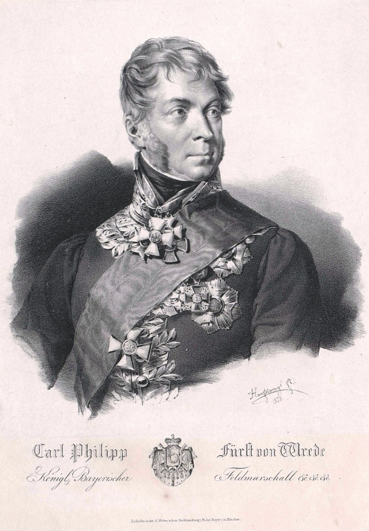
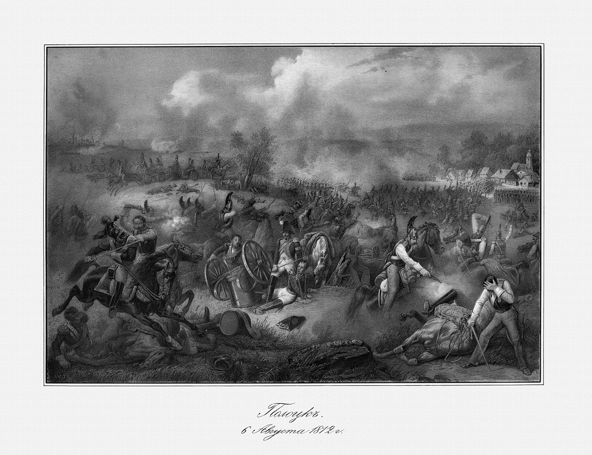

바이에른의 배신 (10) - 두 개의 봉인이 풀리다
게시: 2024-10-14T06:30:18+09:00
막시밀리안 1세의 맏아들인 루드비히는 1809년 당시 23세 한창 나이였는데, 당연히 실전에서 사단장 노릇을 하기에는 너무 어린 나이였습니다. 그의 성향은 원래부터 반(反)프랑스, 친(親)오스트리아이자 낭만적인 민족주의였습니다. 그는 특히 독일 중세 시대에 대한 매니아로서 나중에 왕이 된 이후 상(上) 바이에른(Oberbayern), 하(下) 바이에른(Niederbayern), 슈바벤(Schwaben), 프랑켄(Franken) 등의 옛 지방명을 복원하고 자신의 호칭도 '바이에른 국왕이자, 프랑켄 공작, 슈바벤 공작, 팔츠 백작' 등으로 고치기도 했습니다. 좀 오버스러운 이런 성향은 그가 배운 것이 많은 사람이기 때문이기도 했지만 장애에 가까울 정도로 귀가 잘 들리지 않고 말더듬이 심했다는 점에 대한 열등감 때문이기도 했습니다.

(훗날 바이에른 국왕 루드비히 1세가 된 루드비히의 모습입니다. 그는 처음에는 낭만적 자유주의를 옹호했으나, 혁명 사상이 번지자 곧 전제군주의 길로 방향을 급선회했습니다. 결과적으로 그는 1848년 혁명의 해를 버티지 못하고 아들에게 양위하고 정치에서 물러나야 했습니다. 그런데 그가 유럽의 다른 나라 군주들과는 달리 왕위를 지키지 못한 것은 그의 정부였던 롤라 몬테스(Lola Montez)라는 여성이 자신의 공작부인 작위에 반대하던 바이에른 장관 아벨(Karl von Abel)의 축출을 주도하는 등 비선실세 행세를 한 것이 드러났기 때문이었습니다.)
 
(지금도 시끌벅적하게 벌어지는 독일 뮌헨의 옥토버페스트(Oktoberfest)는 바로 이 루드비히 왕세자와 테레사 공주가 1810년 10월 12일 결혼하면서 그를 축하하기 위해 벌어진 축제에서 비롯되었습니다. 참고로 이 결혼 비용을 대느라 테레사 공주의 아버지인 작센-힐트부르크하우젠(Sachsen-Hildburghausen) 공작은 거의 파산 지경에 이르렀다고 합니다. 아래 그림은 1823년 당시의 옥토버페스트에서 벌어진 경마 장면입니다.)

(롤라 몬테스의 본명은 Eliza Rosanna Gilbert로서 원래 아일랜드 출신의 댄서이자 화류계 인물이었습니다. 이 여성은 파리에서 피아니스트 프란츠 리스트(Franz Liszt), 조르쥬 상드(George Sand), 대문호 알렉상드르 뒤마(Alexandre Dumas) 등 많은 사람들과 염문을 뿌리다 바이에른에 입성, 루드비히 1세를 사로잡고 한몫을 단단히 챙겼습니다. 바이에른 국민들은 루드비히 1세의 착하고 고운 마음씨의 테레사(Theresa) 왕비를 동정하며 이 여성을 매우 싫어했다고 합니다. 이 그림은 1847년, 루드비히의 궁정화가가 루드비히를 위해 그린 롤라 몬테스의 초상화입니다. 당시 그녀의 나이 26세였습니다.)

(당시 초상화는 보통 눈치 좋은 화가에 의해 자동보정이 들어가기 마련이니 그림으로는 매우 잘생기고 예쁘다고 하더라도 그걸 액면 그대로 믿을 수는 없습니다. 그러나 롤라 몬테스는 이렇게 1860년에 사진까지 남겼습니다. 당시 그녀의 나이 39세였습니다. 초상화보다 사진이 더 예쁜 여성도 실존하네요. 다만 이 사진을 찍은 뒤 바로 다음 해에 롤라 몬테스는 미국 뉴욕에서 매독으로 사망했습니다.) 당연히 루드비히는 처음부터 나폴레옹과 동맹을 맺는 것에 대해 매우 탐탁치 않게 여겼습니다. 그러나 공식 동맹을 맺던 1805년 그는 19세의 소년에 불과했고 당장 오스트리아군이 바이에른을 침공하는 형편이다보니 그의 반대에 아무도 귀를 기울이지는 않았습니다. 1809년 다시 오스트리아와 전쟁을 하게 되었을 때도, 루드비히의 마음은 오스트리아편이었지만 몸은 오스트리아군에 맞서 싸우는 그랑다르메 제7군단 산하 바이에른군 제1사단의 사단장으로 복무하고 있었습니다. 결국 나폴레옹의 빛나는 승리로 마감된 란츠후트(Landshut) 기동전의 일부였던 아벤스베르크(Abensberg) 전투에 루드비히도 참전했습니다.

(아벤스베르크 전투에서 바이에른과 뷔르템베르크 병사들을 격려하는 나폴레옹입니다. 좌측에 있는 병사들이 바이에른 병사들인데, 병사들의 투구에 달린 복실복실한 검은 깃털 장식 같은 것이 바로 바이에른군 특유의 셔닐(chenille, 프랑스어로 애벌레, 송충이라는 뜻) 천으로 만든 솜털 장식입니다.) 이 아벤스베르크 전투에서 루드비히 왕자가 혹시 프랑스군 장군들로부터 모욕이라도 당했을까요? 그런 기록은 없습니다. 아무리 프랑스군이 바이에른군을 깔보고 있었다고 하더라도 그래도 타국 왕자님이자 외젠의 처가댁 사람에게는 최소한의 예의는 지켰겠지요. 문제가 있었다면 루드비히 왕자가 이때 르페브르 원수 밑에서 함께 싸우던 바이에른군 제2사단장 브레더(Karl Philipp von Wrede) 장군과 친분을 쌓게 되었다는 점이었습니다. 함께 있던 제3사단장 드로이(Bernhard Erasmus von Deroy)는 별 문제가 없었습니다. 당시 이미 65세였던 드로이 장군은 매우 신사적인 고참으로서 사실상 바이에른군의 총사령관이나 다름없는 위치였고, 막시밀리안의 전적인 신뢰를 얻고 있는데다 프랑스에 대해 딱히 악감정을 가진 사람은 아니었습니다. 1805년 아우스테를리츠 전투 직전, 뮌헨을 탈환해준 베르나도트에게 막시밀리안 1세는 바이에른군의 장군들을 소개하면서 특별히 드로이를 지목하며 '이 사람은 전적으로 믿어도 좋소, 이 사람은 나와 동일하게 생각한다오.'라고 말할 정도였습니다. 원래 드로이는 제1사단장이었으나, 이번에 처음으로 참전하는 루드비히 왕자를 위해 제1사단장 자리를 양보하고 보충병으로 이루어져 제2선급 부대였던 제3사단장으로 자리를 옮긴 상태였고, 결국 그의 제3사단은 실전에 참전하지도 않았습니다.

(드로이 장군입니다. 그는 7년 전쟁 때부터 군 생활을 했던 노장 중의 노장으로서, 브레더와는 달리 원래 군인 집안 출신의 정통 귀족이었습니다. 그가 러시아 원정 도중 바이에른 병사들이 겪는 여러가지 어려움에 대해 호소하기 위해 막시밀리안 1세에게 보낸 편지 몇 통은 생생한 역사 자료가 되었습니다.) 문제는 위에서 언급한 대로 브레더였습니다. 브레더는 나폴레옹보다 2살 연상인 한창 나이로서, 원래 팔츠 공국에서 군인이 아니라 낮은 직급의 행정관으로 일하던 하급 귀족이었습니다. 그러다 제2차 대불동맹전쟁이 벌어지면서 1799년 바이에른도 말려들자, 농민들을 모아 군부대를 조직하여 그 지휘관으로 나서면서 군인이 된 사람이었습니다. 당시 바이에른의 동맹 은 오스트리아였는데 이 농민병 부대에 대해 비웃음을 감추지 않았지만 브레더는 나름 잘 싸웠고, 특히 호헨린덴 전투에서 패주하는 오스트리아군의 후위를 맡아서 꽤 두각을 드러냈습니다. 그 공로로 브레더는 바이에른 정규군 중장으로 임관되었습니다. 브레더는 능력과 함께 개인적 매력도 가진 사람으로서, 막시밀리안 1세의 바이에른군 개혁의 혼란 속에서 병사들과 장교들 양측의 요구와 사정을 잘 듣고 타협할 줄 아는 재주를 가지고 있었나 봅니다. 그는 군 안팎에서 인기와 신망을 얻었고, 특히 1805년 오스트리아의 침공으로 발발된 제3차 대불동맹전쟁에서 꽤 잘 대응하여 프랑스군의 신뢰도 얻었습니다.

(브레더 장군입니다. 아메이(Auguste Jean Ameil)라는 프랑스 장군이 브레더의 더러운 인품과 이중 플레이 등 많은 험담을 늘어놓은 기록이 있기는 합니다만, 배신당한 프랑스 장군 입장에서는 아마 있는 말 없는 말을 다 지어 악담을 적었을 것이니 그걸 그대로 믿기는 어렵습니다.) 그러나 본질적인 문제가 사라지지는 않았습니다. 브레더가 1799년 맨 처음 농민병 부대를 조직할 때도 오스트리아군의 비웃음을 받았듯이, 아무래도 약소국 바이에른군에 대해 오만한 프랑스군의 기본 태도는 경멸과 무시였던 것입니다. 이런 대접을 받고도 프랑스에 대해 그저 우호적인 태도를 취하기엔 풍운아이자 야심가였던 브레더의 자존심이 너무나 컸습니다. 특히 프로이센과의 전쟁 중에 벌어진 1806년 12월 말 푸오투스크(Pułtusk) 전투에서는 상황이 심각했습니다. 브레더는 바이에른군을 지휘하여 잘 싸웠는데도 불구하고 프랑스군으로부터 푸대접을 받았을 뿐만 아니라 브레더 개인에게는 현지 주민에 대해 약탈을 저질렀다는 추궁까지 가해졌던 것입니다. 브레더 개인의 인품을 고려할 때 약탈을 저질렀다는 혐의가 사실일 수도 있었습니다. 그러나 당시 프랑스군 장교들 상당수도 약탈을 저지르고 있었습니다. 그런데 브레더에게만 그런 혐의를 씌우는 것은 명백한 차별이었습니다. 브레더는 이 일로 인해 1809년 제5차 대불동맹전쟁 때도 프랑스군에 대해 매우 좋지 않은 감정을 가지고 싸웠고, 막시밀리안 1세는 그런 브레더를 다독거리느라 애를 먹어야 했습니다. 아무튼 브레더의 지휘 아래 아벤스베르크 전투는 꽤 성공적인 전과를 냈고, 루드비히는 브레더라는 인물과 나름 전우애를 쌓고 무사히 뮌헨으로 돌아올 수 있었습니다. 이 둘은 이후에도 기회가 날 때마다 반나폴레옹 반프랑스 정서를 드러냈고 서로가 뜻을 같이 한다는 것을 확인했습니다. 왕권의 주요 인물인 왕세자 루드비히와, 군권의 주요 인물 브레더가 나란히 반프랑스파라는 점은 바이에른의 외교 정책에 있어 어두운 그림자를 드리우는 것이었습니다. 그러나 이 둘은 마음껏 반프랑스 정책을 펼칠 기회를 얻지 못했습니다. 우유부단한 국왕 막시밀리안 1세는 없는 사람으로 간주한다고 해도, 사실상 전권을 휘두르던 수상 몽겔라스가 외교와 행정을 완전히 장악하고 있었고 바이에른군에 대해 가장 강력한 영향력을 가지고 있는 사람은 브레더가 아니라 노장 드로이였기 때문이었습니다. 그런데 이렇게 루드비히와 브레더의 반프랑스 정서를 억누르고 있던 봉인 2개가 한꺼번에 풀리는 일이 발생합니다. 바로 1812년 러시아 원정이었습니다. 여기에는 드로이와 브레더가 모두 참전했는데, 둘 다 생시르(Laurent de Gouvion Saint-Cyr) 원수의 제6군단에서 페체르부르크 방면을 맡았습니다. 그런데 그만 드로이가 8월 중순 벌어진 제1차 폴로츠크(Polotsk) 전투에서 전사해버리고 말았습니다. 남은 바이에른군은 모두 브레더의 지휘 하에 놓이게 되었습니다. 이와 동시에, 바이에른 본국에서는 몽겔라스의 권력이 크게 약화되고 있었습니다. 나폴레옹이 러시아 원정 준비를 하면서 바이에른에게도 무리한 인원 및 물자, 자금을 차출하는 바람에 바이에른의 경제가 크게 어려워졌던 것입니다. 특히나 몽겔라스가 강력하게 추진했던 '토지의 완전사유화'(allodification)에 의한 토지 개혁은 그 토지를 매입한 평민들이 꾸준히 안정적으로 토지 대금을 상환해야 성공할 수 있는 것이었습니다. 그런데 농사를 지을 젊은이들과 밭을 갈 말들이 모두 러시아로 끌려가 버리니, 그 대금 상환도 어렵게 되었고 흉년까지 들게 되었습니다. 이는 몽겔라스 최대의 사업이었는데, 그게 실패로 기울면서 몽겔라스의 권력도 기울게 된 것입니다. 결국 나폴레옹의 러시아 원정은 나폴레옹의 몰락을 가져올 모든 것의 시작이 된 셈이었습니다.

(1812년 8월 6일, 1차 폴로츠크 전투에서 드로이가 치명상을 입는 장면입니다. 아마 나폴레옹은 저 늙은 바이에른 장군의 전사가 자신의 뒤통수에 타격으로 돌아올 것이라고는 꿈에도 상상하지 못했을 것입니다.) 결정타는 역시 1813년 작센에서의 작전에서 나폴레옹이 러시아-프로이센-오스트리아 연합군을 제대로 제압하지 못한 것이었습니다. 특히 9월초 덴너비츠(Dennewitz) 전투의 패전으로 나폴레옹의 구상이 엉망이 되어버리자, 진작부터 프랑스를 배신해야 한다고 목소리를 높이던 루드비히와 브레더의 목소리는 더욱 높아졌습니다. 막시밀리안 1세는 매우 소심한 사람이었고, 이 둘은 이대로 나폴레옹과 함께 침몰하여 바이에른을 멸망의 길로 이끌 것이냐고 막시밀리안을 설득했습니다. 여기에 대해 몽겔라스도 딱히 반대할 수가 없었습니다. 그 자신도 나폴레옹이 몰락의 길을 걷고 있다고 판단하고 있었고, 몽겔라스 또한 나폴레옹을 어디까지나 비즈니스 때문에 만나는 사람으로 인식하고 있었을 뿐 나폴레옹 개인에 대해 조금도 존경심이나 의리를 가지고 있지 않았기 때문이었습니다.
당장 연합군의 침공을 받아야 했던 작센에 비해 바이에른은 후방이라고 하지만 바이에른도 오스트리아와 국경을 맞댄 나라였습니다. 루드비히와 브레더가 이제 나폴레옹을 버려야 한다고 강력히 주장하는 가운데 막시밀리안과 몽겔라스도 어떻게든 바이에른의 살 길을 찾아야 했습니다. 게다가 오스트리아의 브레인인 메테르니히의 전략도 주효했습니다. 당장은 프로이센과 동맹을 맺었지만 과거부터 독일권의 맹주 자리를 놓고 프로이센과 싸웠던 오스트리아는 바이에른을 자기 편으로 끌어들여야 하는 입장이었습니다. 메테르니히는 바이에른에게 '라인연방의 해체는 이미 기정 사실이고, 프로이센은 기존 라인연방의 소국들을 희생시켜 자국 영토를 늘릴 생각이다, 하지만 바이에른이 가장 먼저 라인연방에서 나폴레옹을 배신한다면 바이에른의 영토와 주권은 오스트리아가 보장해주겠다'라며 유혹했습니다. 9월 중순부터 브레더는 오스트리아의 메테르니히와 부지런히 바이에른의 전향 조건을 협상했습니다. 애초에 막시밀리안과 몽겔라스는 브레더에게 '협상조건은 바이에른의 중립'이라고 지시했지만, 9월 말 벌어진 어떤 사건 때문에 결국 바이에른은 중립의 입장을 지키지 못하고 1주일 안에 나폴레옹에게 선전포고를 한다는 조건으로 오스트리아와 10월 8일 리드(Ried) 조약을 맺습니다. 실제로 10월 14일, 바이에른은 공식적으로 나폴레옹에게 선전포고를 전달합니다. 대체 9월 말 어떤 사건이 있었길래 바이에른은 나폴레옹과의 혈투를 각오하고 리드 조약을 맺었던 것일까요? Source : The Life of Napoleon Bonaparte, by William Milligan Sloane Napoleon and the Struggle for Germany, by Leggiere, Michael V With Napoleon's Guns by Colonel Jean-Nicolas-Auguste Noël https://en.m.wikipedia.org/wiki/Ludwig_I_of_Bavaria https://en.wikipedia.org/wiki/Auguste_Jean_Ameil https://www.napoleon-series.org/military-information/organization-strategy-tactics/our-allies-the-bavarians-appendix-i-on-generals-deroy-and-von-wrede/ https://en.wikipedia.org/wiki/Karl_Philipp_von_Wrede https://en.wikipedia.org/wiki/Battle_of_Abensberg https://regierung.niederbayern.bayern.de/meta/leichte_sprache/ https://www.thenapoleonicwars.net/forum/key-figures-of-the-era/eugene-beauharnais-and-the-wittelsbach-family